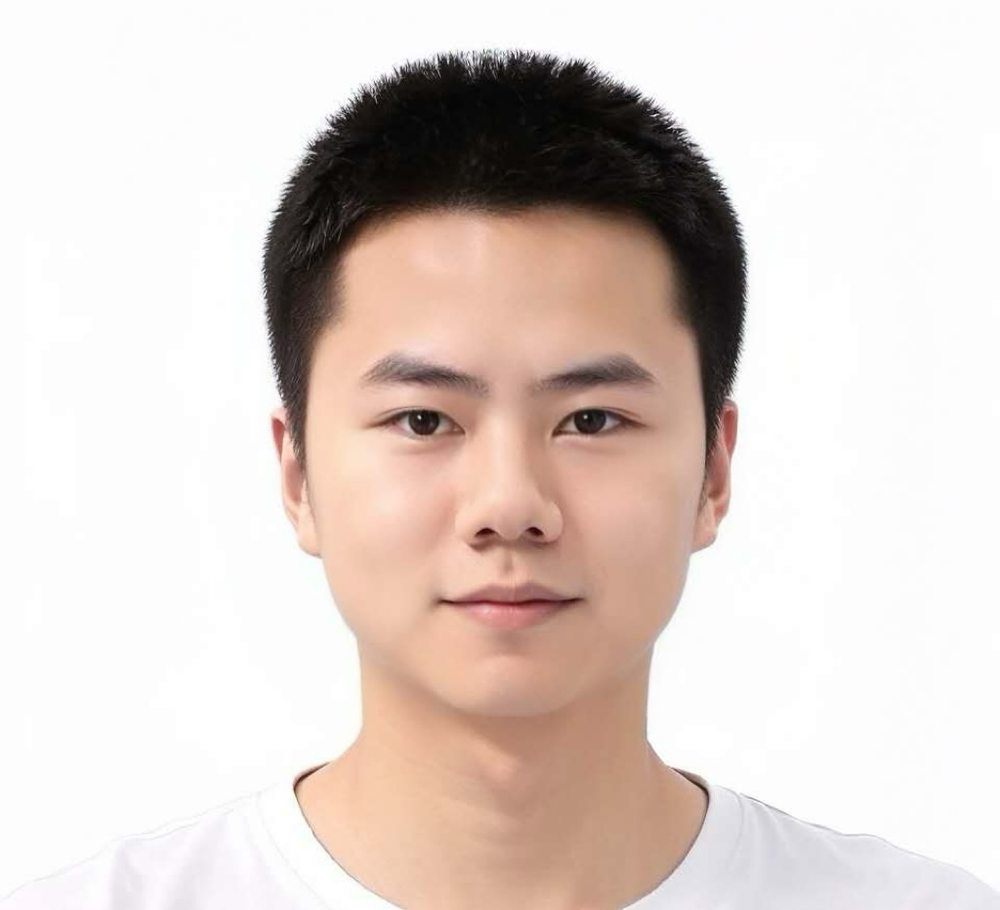

Ph.D. Student
Abu Dhabi, UAE
liuyuyang20000306@gmail.com
Skills
Python
PyTorch
Linux
Git
Languages
Chinese
English
I am a Ph.D. student in Computer Vision at MBZUAI. My research focuses on multimodal large language models, vision-language models, and embodied intelligence.
I received my M.Sc. in Computer Science from MBZUAI in 2026 and my B.Sc. in Data Science and Big Data Technology from the University of International Business and Economics in 2022.
Previously, I was a research engineer at Megvii Research and a research intern in its Foundation Model group, working on large vision-language models, open-vocabulary detection, continual instruction tuning, and vision-language-action models.
Yuyang Liu*, Meng Cao*, Xinyuan Shi, Xiaodan Liang.
COLT: Enhancing Video Large Language Models with Continual Tool Usage.
Transactions on Machine Learning Research (TMLR).
Meng Cao*, Yuyang Liu*, Xiuwei Chen, Yingfei Liu, Tiancai Wang, Jiahua Dong, Henghui Ding, Ian Reid, Xiaodan Liang.
Continual Retrieval-Augmented Generation for Large Vision-Language Models.
Revision submitted to TPAMI.
Meng Cao*, Yuyang Liu*, Yingfei Liu, Tiancai Wang, Jiahua Dong, Henghui Ding, Xiangyu Zhang, Ian Reid, Xiaodan Liang.
Continual LLaVA: Continual Instruction Tuning in Large Vision-Language Models.
Preprint.
Yufei Huang, Siyuan Li, Lirong Wu, Jin Su, Odin Zhang, Haitao Lin, Zihan Liu, Zhangyang Gao, Yuyang Liu, Jiangbin Zheng, Stan Z. Li.
Protein 3D Graph Structure Learning for Robust Structure-based Protein Property Prediction.
AAAI 2024.
Conducted research on large vision-language models and open-vocabulary detection.
Developed AI Service, an algorithm production infrastructure designed to support large-scale model deployment.
Contributed to a published paper: "OpenMPD: An Open Multimodal Perception Dataset for Autonomous Driving"
Proposed an autonomous driving dataset, which includes all the mainstream task annotations, such as 2D and 3D bounding box and segmentation, which plays an important role in multi-task and multi-modal fusion network.
Contributed to a paper: Protein 3D Graph Structure Learning for Robust Structure-based Protein Property Prediction
A protein structure embedding alignment optimization framework is proposed to alleviate the structure embedding bias.
Enhanced the BARON baseline by applying self-distillation to augment data, employing teacher models trained for a substantial number of iterations (e.g., 10,000) to label images with novel class tags based on confidence thresholds.
Achieved a notable increase in the model's MAP50 score on novel classes, raising it from 33.2 to 38.2.
Researched continual instruction tuning for vision-language models and unsupervised pretraining for vision-language-action models.
Focused on implementing and optimizing 2D and 3D object detection algorithms for parking perception systems.
Focused on developing and implementing security products, including anomaly detection and anti-crawler measures.
Utilized bio-inspired algorithms for optimizing hospital visit sequences for medical representatives at Naxions.